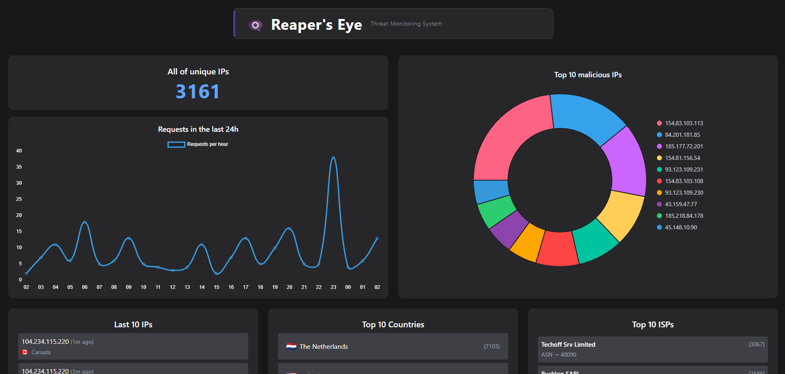

▓█████▄ ▓██ ██▓ ██████ ▄▄▄█████▓ ▒█████ ██▓███ ██▓ ▄▄▄ ███▄ █
▒██ █▌ ▒██ ██▒▒ ██ ▒ ▓ ██▒ ▓▒ ▒██▒ ██▒ ▓██░ ██ ▒▓██▒▒ ████▄ ██ ▀█ █
░██ █▌ ▒██ ██░ ▓██▄ ▒ ▓██░ ▒░ ▒██░ ██▒ ▓██░ ██▓ ▒▒██▒▒ ██ ▀█▄ ▓██ ▀█ ██▒
░▓█ █▌ ░ ▐██▓░ ▒ ██▒ ░ ▓██ ░ ▒██ ██░ ▒██▄█▓▒ ▒░██░░ ██▄▄▄▄██ ██ ▐▌██▒
░█████▓ ░ ██▒░ ██████▒▒ ▒██▒ ░ ░ ████▓▒░ ▒██▒ ░ ░░██░ ▓█ ▓██ ▒██░ ▓██░
▒▒▓ ▒ ██▒▒ ▒ ▒▓▒ ▒ ░ ▒ ░░ ░ ▒ ▒░ ░ ▒ ▓██ ░░▓ ▒▒ ▓▒█░ ░ ▒░ ▒ ▒
░ ▒ ▒ ▓██ ░ ░ ░ ░▒ ░ ░ ░ ░ ░ ▒ ▒░ ░ ▒ ░ ▒ ░ ▒ ▒▒ ░ ░ ░░ ░ ▒░
░ ░ ░ ▒ ▒ ░ ░ ░ ░ ░ ░ ░ ░ ▒ ░ ░ ▒ ░ ░ ▒ ░ ░ ░
A segurança ofensiva e a coleta de inteligência são fundamentais para entender como atores maliciosos se comportam na internet. Este projeto tem como objetivo apresentar a arquitetura de um honeypot HTTP leve, escalável e de baixo custo, utilizando tecnologias amplamente acessíveis, com foco em visualização e armazenamento de dados em tempo real.
Este artigo não contém código-fonte intencionalmente. O objetivo é fornecer um guia conceitual que permita a qualquer profissional de segurança construir uma solução similar com base na arquitetura e boas práticas aqui descritas.
A ideia central é:
A estrutura do projeto é composta pelos seguintes elementos:
A escolha do NGINX como honeypot foi motivada por sua leveza, popularidade e capacidade de log avançado. A configuração foi ajustada para registrar os seguintes campos por requisição:
O servidor está exposto em uma instância cloud com portas específicas abertas, controladas via firewall, evitando exposição desnecessária.
Utilizei um script em Python para:
Foi criado uma tarefa no cronjob para esse coletor, a fim de manter o script ativo e realizar as coletas de logs em tempo real, enviando as informações para o banco de dados assim que ela é gerada.
O banco de dados escolhido foi o MongoDB Atlas (plano gratuito), que atende bem ao volume inicial de logs. Alguns pontos importantes:
Para a visualização dos dados, desenvolvi um painel web em Next.js, utilizando bibliotecas como:
A aplicação é hospedada na Vercel com domínio próprio, permitindo o acesso público ao painel.
Mesmo sem expor o código, qualquer profissional pode montar algo semelhante com os seguintes passos:
Este projeto mostrou que é possível construir um honeypot funcional e útil com custo quase nulo, utilizando ferramentas modernas e gratuitas. A arquitetura é modular e permite melhorias contínuas, como:
Link para a dashboard do honeypot: Reaper's Eye
Este projeto representa não apenas uma solução técnica, mas também uma forma de explorar e entender o comportamento de ameaças reais na internet por meio de um sistema totalmente controlado. O “Reaper's Eye” é mais do que um honeypot: é uma ferramenta de aprendizado constante, desenvolvimento pessoal e contribuição para a comunidade.
Ao compartilhar a arquitetura e os princípios deste projeto, espero inspirar outros profissionais e entusiastas da segurança a criarem suas próprias soluções, adaptadas às suas realidades. Com criatividade e as ferramentas certas, é possível alcançar um alto nível de insight e eficiência sem depender de grandes investimentos.
Se quiser conversar sobre segurança ofensiva/defensiva, threat intelligence ou tiver ideias para evoluir este projeto, sinta-se à vontade para entrar em contato comigo em meu linkedin.
A suprema arte da guerra é vencer o inimigo sem lutar.